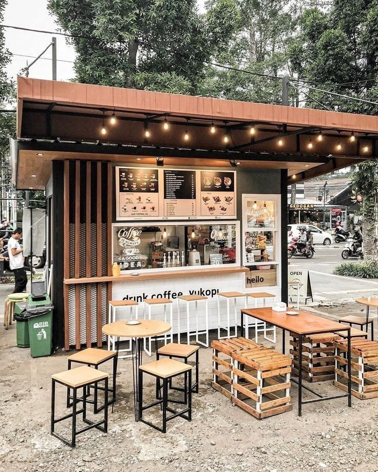

Kisah Kami
Dari Biji ke Komunitas.
Awal Mula Warkop51
Warkop51 lahir pada tahun 2020 dari mimpi sederhana: menciptakan tempat di mana kualitas kopi bertemu dengan kehangatan komunitas.
Kami mulai dengan satu roaster kecil dan komitmen teguh untuk mendukung petani kopi lokal.

Visi & Nilai Inti Kami
🇮🇩
Dukungan Lokal
Kami berkomitmen menggunakan biji kopi terbaik dari petani Indonesia.
🧪
Keahlian Menyeduh
Barista kami adalah seniman yang memastikan rasa yang konsisten di setiap cangkir.
👥
Ruang Komunitas
Warkop51 adalah tempat berkumpul yang nyaman dan ramah bagi semua.
Rasakan Sendiri Perbedaannya!
Kunjungi kedai kami dan rasakan pengalaman kopi terbaik bersama tim Warkop51.
Temukan Lokasi Kami →